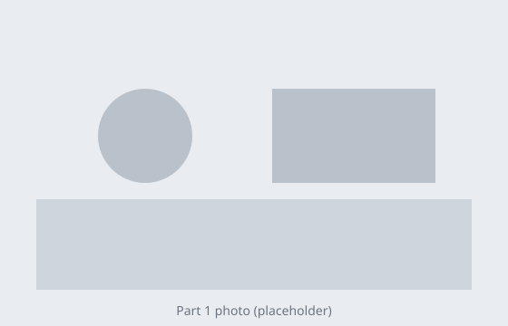

Speaking practice — question 3 of 11
Questions 1 and 2 were saved. Question 3 was cut off when time ran out, and the part you had recorded was kept. Your answers are being sent for grading, so no further action is needed.
Do not close the page. Recordings you did not make are not graded.

Look at the picture and plan what to say. You are not being recorded yet.
Starts in 00:31Describe the picture. The recording stops by itself when the time runs out.
Time to speak 00:21This recording is only on your device. Play it back, then save it or record it again.
00:00 / 00:27
Keep this tab open until the upload finishes.
Your 27-second recording is still on this device. It is lost if you close the tab before it uploads.
Questions are taken in order. Once a recording is saved you cannot return to it.